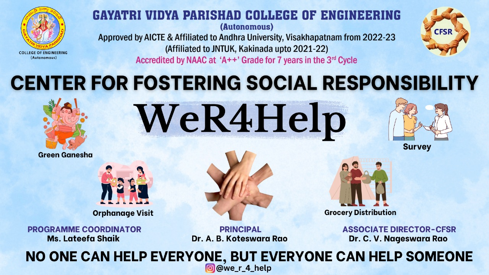
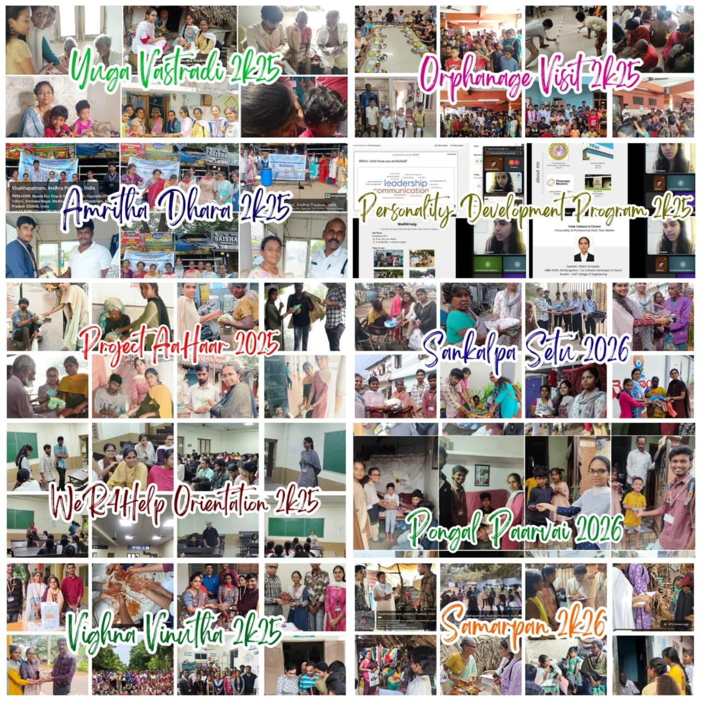
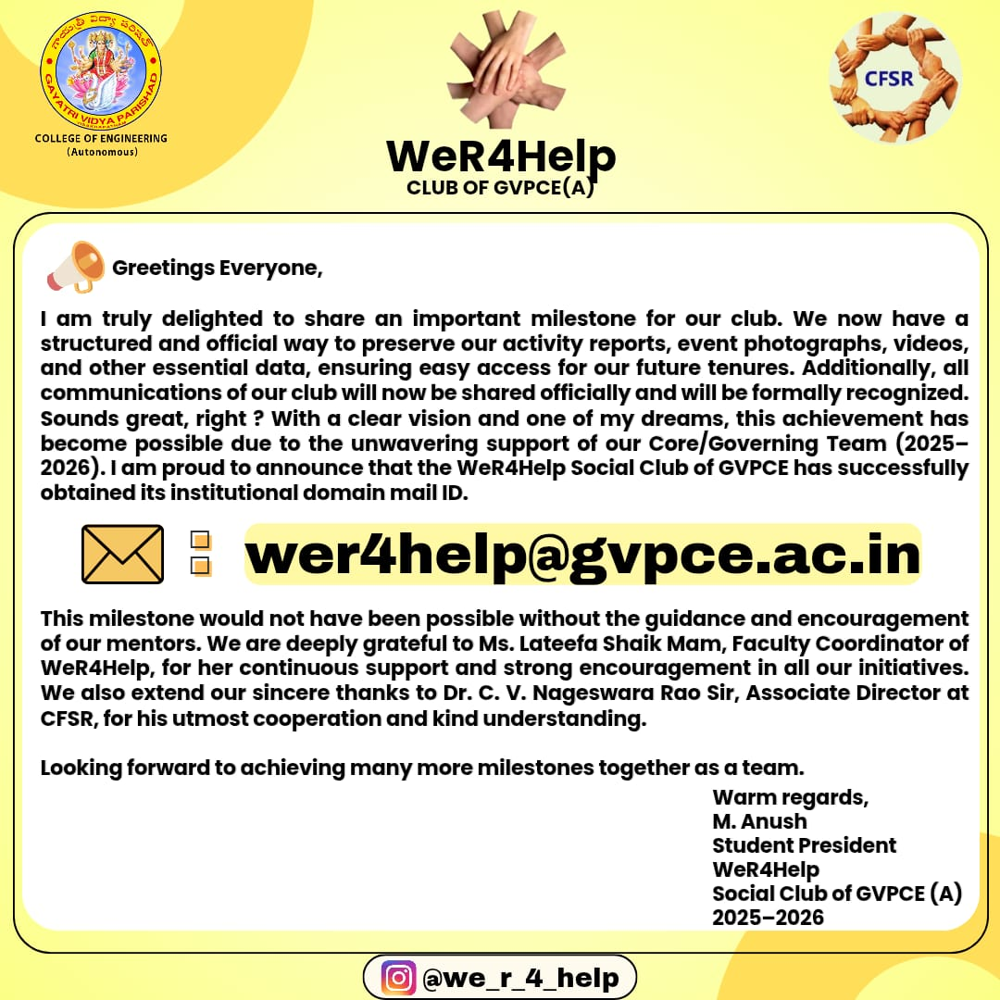
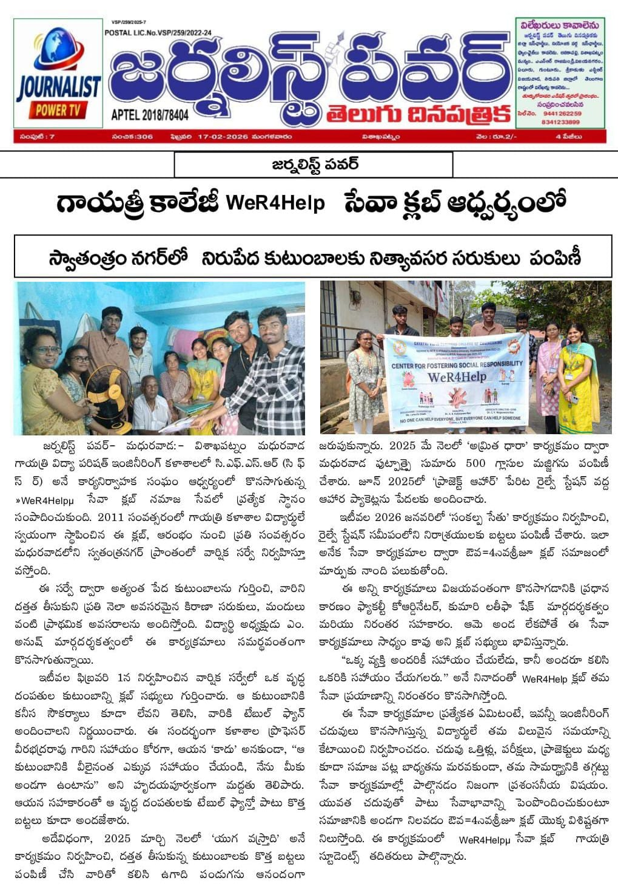
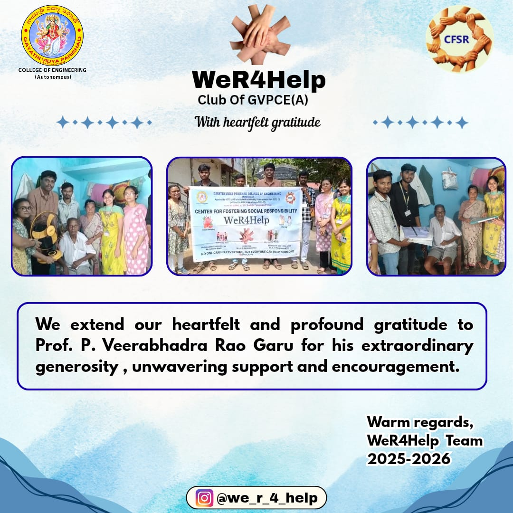

Impact & Achievements

Key milestones and achievements of WeR4Help.
Club Banner Relaunch

🎉Delighted to share that our club banner is finally here!! We have worked together 🤝 with great energy ⚡ and ideas to create a banner that truly reflects who we are. We believe this banner is more than just a design it’s a symbol of our unity, spirit, passion and teamwork 👯. This is a proud 💪 moment for all of us and we can’t wait to show it to everyone ✨.
Launch of Aashraya Connect
📢 We are delighted to announce the launch of AASHRAYA CONNECT 🚀 As part of our ongoing commitment 🤝, WeR4Help conducts an annual survey to identify the needs of underprivileged families and extend meaningful support. In previous years, data was collected randomly on papers and booklets 📋making long term storage, tracking, and review difficult. As a result, valuable information was often lost after the survey. Through our experience we realized that data must be securely stored and maintained. Accurate records allow us to understand each family’s condition over time not just at a single point. To overcome this challenge and strengthen our impact 💪, our Club President has introduced a standardized survey format starting this tenure 📝. 📌 What is AASHRAYA CONNECT ? AASHRAYA CONNECT is designed to systematically capture complete and relevant information about beneficiary families, ensuring long term reference and continuity across future tenures. AASHRAYA CONNECT is more than a form it is a bridge between past efforts, present action & future responsibility 🪄 This form and its framework were introduced during the 2025-26 tenure of the Student President, and the original attribution shall remain unchanged across all future tenures.
Open Aashraya Connect FormRecord Breaking Tenure

This 2025-26 tenure has truly taken the club's growth 📈 graph to new heights and stands among the best of all previous tenures with 11+ powerful initiatives where every event reflected purpose, passion and impact ✨. Not just events, we ensured 12 continuous months of grocery distribution and medical support to our adopted families, showing consistency in service and even made the meaningful contribution of a table fan, something that had never been achieved before 🙌. This remarkable journey became possible because of the dynamic leadership💪 and strong vision of our Student President M. Anush, whose dedication and unwavering commitment inspired the entire team 💫. With the constant guidance of our Faculty Coordinator and the united efforts of the Core & Governing Team, every effort evolved into an outstanding accomplishment. This isn't just a tenure. It is a journey of growth, unity and meaningful impact ⚡. A tenure that didn't just follow history but created new milestones and set new benchmarks. Truly, one of the finest and most impactful tenures ever!!
Institutional Domain Email

🚀 A big step forward for our club's growth and recognition. This milestone was made possible through the strong leadership of our Student President and the combined efforts of the club's team. 🤝
Media Recognition
Newspaper Coverage

The initiatives and community service efforts of WeR4Help received recognition in local newspapers. The coverage highlighted the club’s dedication to social impact, volunteerism, and meaningful contributions to the community.
Earned a Feature on YouTube
The work speaks for itself. Recognition follows 📈⭐
Donation of a Table Fan

Deeply thankful 💐 to Professor P. Veerabhadra Rao Garu Dean of Infrastructure Planning and Development - Gvpce, for standing with us. His kindness didn't just support an initiative, it made a real difference in someone's life 💫. In our recent survey 📝, we identified an elderly couple who were struggling without even the most basic necessities. When we brought into his notice, he immediately stepped forward with compassion 🤝 and reassurance. His willingness to provide not only a table fan but also a pair of new clothes truly reflects his kind heart and commitment to service. This meaningful support 💪 became possible only because of his wholehearted cooperation and constant encouragement. Our heartfelt thanks once again for making this act of service truly possible 🙏.